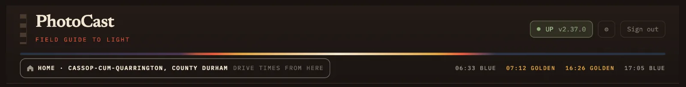

At a Glance.
At a Glance is where PhotoCast opens. It sets out the next few sunrises and sunsets side by side, so you can see which are worth thinking about before looking at any one place. On a phone the tab is simply called Glance.
The top of the screen
Under the PhotoCast name you'll find the ⌂ home you're planning from, with today's blue hour and golden hour times for that place. The coloured band above them traces the day's light, from blue through gold and back.
- If you haven't set a home postcode yet, this shows Set a postcode. It takes you straight to the right field in Settings.
- The search lets you jump to a day, a region or a named place.
- When the northern lights are possible, an aurora banner appears here too.

Drive and rating
The bar under the top of the screen filters the whole page at once. It stays in place as you scroll.
Drive from home Pro
Choose how far you're prepared to travel: 45 min, 1h 30, 2h 30 or Any. Each sunrise and sunset summary then considers only locations within your selected drive time.
It starts at 45 minutes on weekdays and 2h 30 at weekends. If you change it, a today only tag appears with a Back to 45 min button, and it resets the next day. If you're planning from somewhere else, it reads Drive from Keswick, for example.
The filter uses your personalised drive times. On Lite the drive time buttons are greyed out and every location counts.
Rated
Hide anything below a rating: Any rating, or one to four stars and above. This works on Lite and Pro.
The end of the bar tells you what's left, for example "12 spots across 6 windows", which means 12 locations across six sunrise and sunset forecasts. If your filters leave nothing, PhotoCast says so and offers a one-tap way out, such as widening the drive time or lowering the rating.
The days ahead
The page is laid out as one column per day, with that day's sunrise and sunset beneath it.
Hot topic labels
Hot topics are notable photographic conditions and events, such as a spring tide, a cloud inversion or a supermoon. Under each date you'll see that day's hot topics as small labels. Each label shows the topic, a key figure and sometimes a tag. For example, a spring tide might read "4.8 m · run starts" and a cloud inversion "dawn · 9/10".
- A label with a solid outline is fixed, such as a tide or a full moon. A dashed outline means it could still move. More on fixed and could still move.
- PEAK marks the biggest day of an event that lasts several days. WX marks a weather-driven topic: one that is only known from the forecast, such as mist, an inversion, dust, a storm surge, snow, aurora or noctilucent cloud.
- Tap a label to open it in Coming up. All in Coming up → under the days takes you to the full list.
A day with no labels simply has nothing special forecast.
Sunrise and sunset cards
Each card is one sunrise or sunset. It shows:
- the time of the sunrise or sunset and a verdict: Worth it, Maybe or Poor
- the best rating within your selected drive time
- a small map of the area in the forecast colours, with a few place names so you can get your bearings
- a note when the forecast has changed since the last update
- on coastal days, how many coastal locations have their preferred tide level at sunrise or sunset, such as "∿ 4 on tide" Pro
Colours fade where the forecast's confidence is lower, which is often, but not always, on later dates. The lowest confidence is marked provisional.
Opening a sunrise or sunset
Tap a card to open it. You get a larger map, the regions ranked from best to worst, and cards for the individual locations with their rating and drive time. Use ‹ and › to step to the previous or next sunrise or sunset without closing it.
Tap a location for its own forecast: every sunrise and sunset over the coming days, the times of blue hour and golden hour, and the tide if it's on the coast. From there you can also open the same sunrise or sunset on the Map.
ProFiery Sky and Golden Hour scores, the tide at the light, and leave-by times worked out from your drive time are available with Pro.
Best betPro
PhotoCast picks one Best bet across the whole few-day forecast: a particular sunrise or sunset and a region, usually with a named location and a short reason. There is at most one Also good alongside it, for when a second option is also worth a look.
At a Glance shows the Best bet on the card for that sunrise or sunset, naming the region. The Map marks the same sunrise or sunset in its window control and shows the pick in that region's panel.
It's written from the same forecast as the ratings, so it's a quick way to narrow down the possibilities when several places look similar.
Planning from somewhere else
If you're away for a few days, you can plan from another region's base town instead of home. Open a location in that region and choose Plan from here. Drive times, the drive time filter and the sunrise and sunset times all switch to the new base.
To come back, use the home button at the top of the screen, labelled Plan from home again.
Tips
- Start with the verdicts on each card, then open only the ones marked Worth it or Maybe.
- Leave the drive time at its default during the week and widen it when you have a free day.
- A hot topic on a Worth it sunrise, such as a spring tide on the coast or an inversion in the Dales, is often the combination worth driving for.